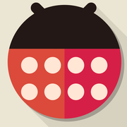
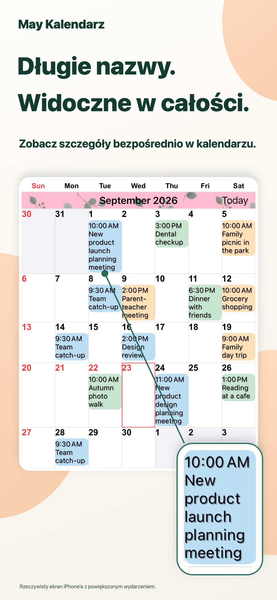
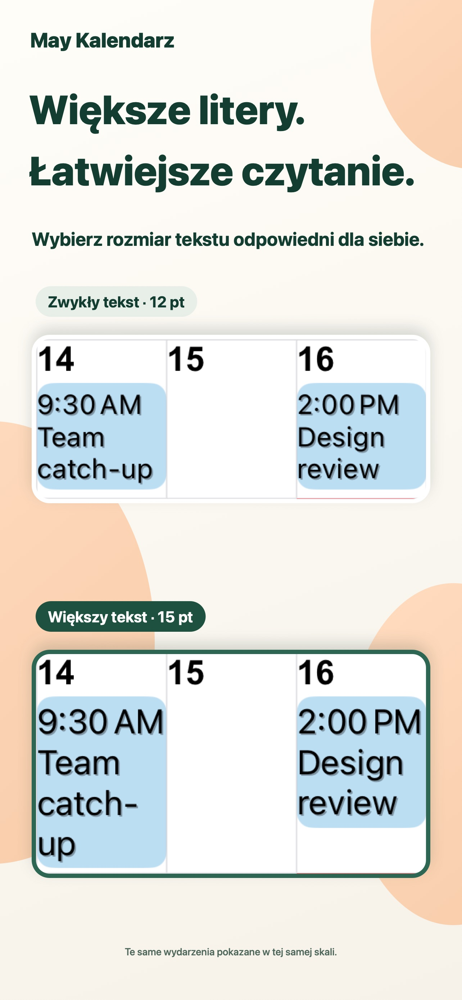
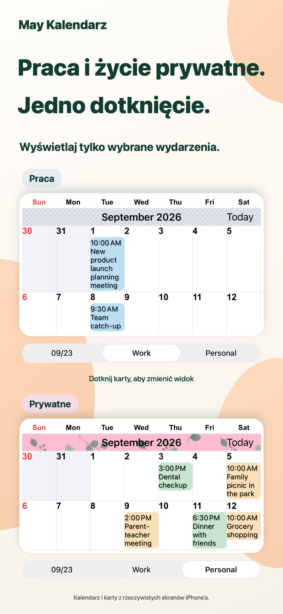
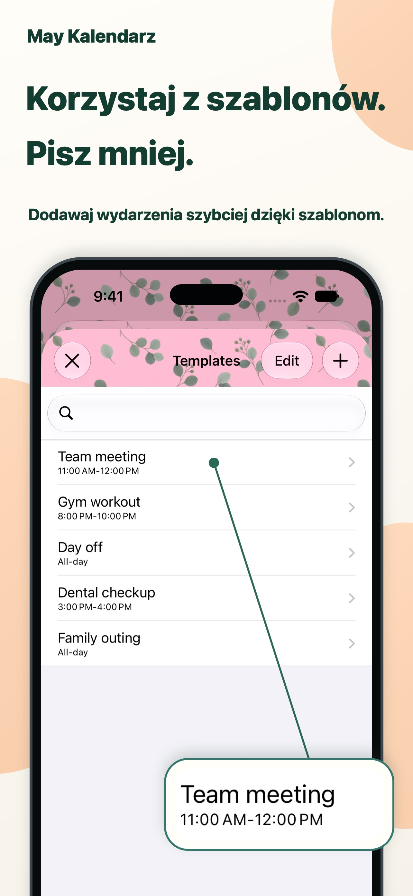

Wygląd po Twojemu.
Łącz kolory motywu, tła wydarzeń i wzory, tworząc własny kalendarz.

May KalendarzKażdy dzień jest czytelniejszy.
Długie nazwy wydarzeń wprost w widoku miesiąca. Tekst i kolory dopasowane do Ciebie, aby łatwiej ogarnąć codzienne plany.
Na iPhone’a i iPadaZobacz w App StorePobieranie bezpłatne · Zakupy w aplikacji

Odrobina wygody w planowaniu dnia.
Praca i życie prywatne w jednym miejscu.NA CO DZIEŃ
Dopasuj kalendarz do swojego sposobu planowania.
Długie nazwy zawijają się do kilku wierszy. Dostosuj czcionkę i rozmiar tekstu, by czytać szczegóły i nadal widzieć cały miesiąc.

Zapisuj zestawy kalendarzy i jednym stuknięciem przełączaj się między planami służbowymi a prywatnymi.

Zapisz spotkania, treningi i wizyty jako szablony. Stuknij dwukrotnie datę i wybierz szablon, by dodać wydarzenie.

MAŁE SZCZEGÓŁY, DUŻA RÓŻNICA.
Łącz kolory motywu, tła wydarzeń i wzory, tworząc własny kalendarz.
Wybieraj spośród 20 typów widżetów, w tym dostępnych tylko na iPadzie.
Wyświetlaj tylko wydarzenia pasujące do wpisanego tekstu.
PYTANIA I ODPOWIEDZI
Pobieranie jest bezpłatne. Dostępne są zakupy w aplikacji. Aktualne ceny i opcje znajdziesz w App Store. Zobacz w App Store
Tak, na iPhonie i iPadzie. Niektóre widżety są dostępne tylko na iPadzie. Aktualne wymagania systemowe sprawdzisz w App Store.
Obsługuje przypomnienia, święta, numery tygodni i informacje kalendarza księżycowego. Można ustawić początek tygodnia i strefę czasową.
Powiadomienia wysyła aplikacja Kalendarz firmy Apple. Można ustawić alert przed rozpoczęciem lub zakończeniem wydarzenia.
CZYTELNIEJSZE DNI.
Zacznij od kalendarza dopasowanego do siebie.
Pobieranie bezpłatne · Zakupy w aplikacji